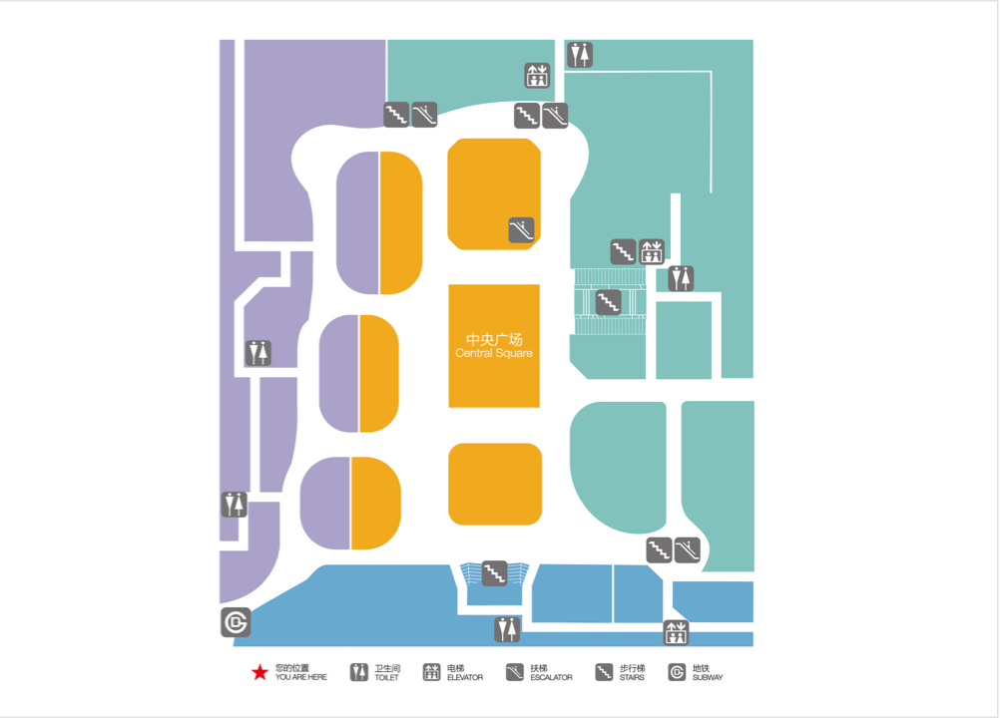
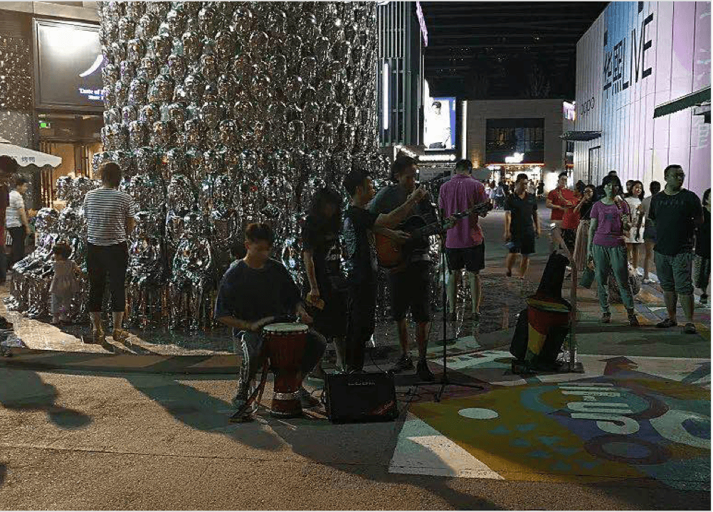

华熙LIVE HI－UP
2017 年4月，在华熙LIVE·五棵松西南角，一片面积近6万平方米的商业区——hi-up惊艳亮相。hi-up西邻西四环，南接复兴路，与地铁一号线五棵松站无缝接驳。中央为大型活动广场，汇聚百余家时尚特色品牌。聚集了各种不同口味的餐饮、各类文化体验、众多酒吧、Live house及运动品牌旗舰店相佑的时尚特色沉浸式互动体验业态。自开业至今，出租率已达到100%，并获得中国经济联盟协会颁发的“2017年度中国商业地产金地标业态创新奖 ”及“北京市阳光餐饮示范街区”荣誉称号。
 开创好吃、好玩、好看全新体验，引领时尚脉动。
华熙在五棵松创办了数十个赛事和文化活动IP，成为北京超高人气的活力聚集地、新生活方式体验地，每年共有近千场赛事、演艺活动在这里爆发出澎湃动力，吸引人流超千万人次，形成华熙live 5小时时尚生活圈
华熙live——从一粒尘，到一个空间，到整个世界。华熙将这种“以综合场馆群运营打造城市活力聚集地 ”的模式迅速地推向全国。